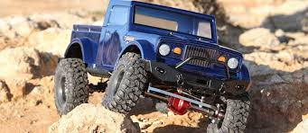

Ne ovat hauskoja ja kivoja!
RC-autot voivat olla hienoja tai rumia, nopeita tai hitaita.
Omistan itse yhden auton.
Niillä voi ajaa asfaltilla, maastossa tai vaikkapa hiekalla.
Ehkä sinun täytyy harkita RC-auton hankintaa.
Tällä sivulla haluan kertoa nyt näiden autojen hienoudesta ja käytöstä.
RC-autoilu on myös hyvin sosiaalinen laji.
Myös suomesta voi löytää monia eri kisatapahtumia,
jos vain tietää mistä etsiä.
Suosittelen katsomaan eri RC-foorumeista.
Tässä esimerkki yhdestä.
Tästä lajista voi löytää myös paljon videoita eripuolelta internettiä.
Suosittelen käyttämään youtubea, se on varmaan helpoin. Tässä yksi siisti
video.
Tässä jonkun toisen auto. Onpa se hieno!

RC-autojen rakentelu on myös hyvin luovaa ja monipuolista
Kuten jo aiemmista kuvista voikin huomata, autoista saa hyvin erilaisia.
Luovuus ei ole kuitenkaan rajoitettu niiden ulkonäköön.
Rc-autoihin saa myös lukuisia eri osia:
- moottoreita
- vastaanottimia
- rattaita
- servoja
- vanteita ja renkaita
Tässä vielä linkki hyvään varaosakauppaan.
Ja tässä vielä kuva RC-auton rungosta: